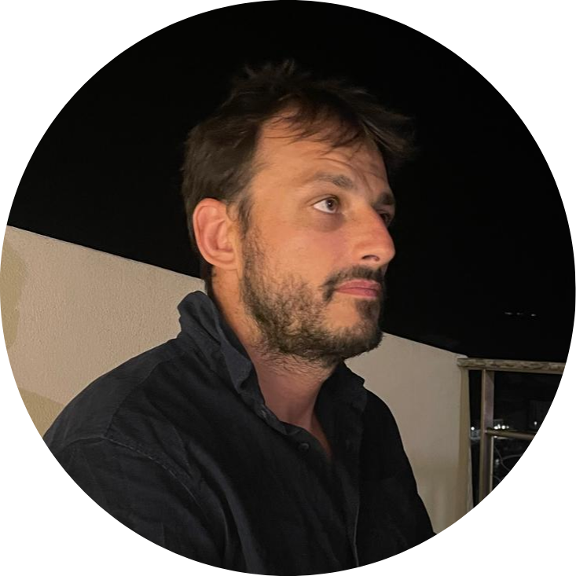

Julien Migozzi, Ph.D.
Welcome! I am an economic and urban geographer. I am an Urban Studies Foundation Postdoctoral Research Fellow at the School of Geography and the Environment at the University of Oxford.
In 2024-2025, I will be a Visiting Scholar at the Department of Sociology and the Berkeley Economy and Society Initiative at UC Berkeley, invited by Professor Marion Fourcade.
My research interests lie at the intersection of financial geography, urban studies, and economic sociology. I examine how digital capitalism reshapes cities and markets, questioning theoretical boundaries and empirical connections between the Global North and the Global South.
My current research project investigates how the rise of platform capitalism reshapes housing markets and inequalities in South Africa. More specifically, I examine how the PropTech industry, through the entanglement of financial capital with digital property technologies, reconfigure value chains, affects patterns of stratification and urban segregation in an emerging economy profoundly shaped by racial capitalism.
I use mixed-methods that combine long-term ethnographic fieldwork with spatial data science, leveraging computational tools, spatial analysis, and data vizualisation.
At Oxford, I was previously a Research Associate in Finance and Geography on the ERC-funded project “Cities in Global Financial Network”. I am a coauthor of the forthcoming Atlas of Finance, published by Yale University Press. From 2017-2021 I was a Lecturer in the Departmebt of Geography at the Ecole Normale Supérieure in Paris.
I am a former student of the Ecole Normale Supérieure de Lyon, where I completed my MA and was received at the agrégation of Geography. I earned my PhD from the University of Grenoble Alpes. My dissertation was awarded both the national Doctoral Prize in Urban Studies and the national Dissertation Award in Geography.
I am an Associate Member of St Peter’s College, a regular Visiting Scholar at the African Centre for Cities at the University of Cape Town, and a Research Associate at the CNRS Research Lab Géographie-cités.
I occasionally write and talk about the geography and sociology of rugby.